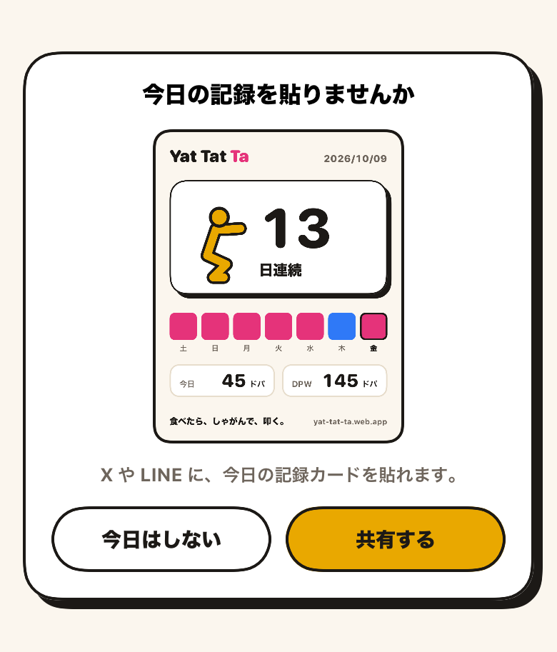
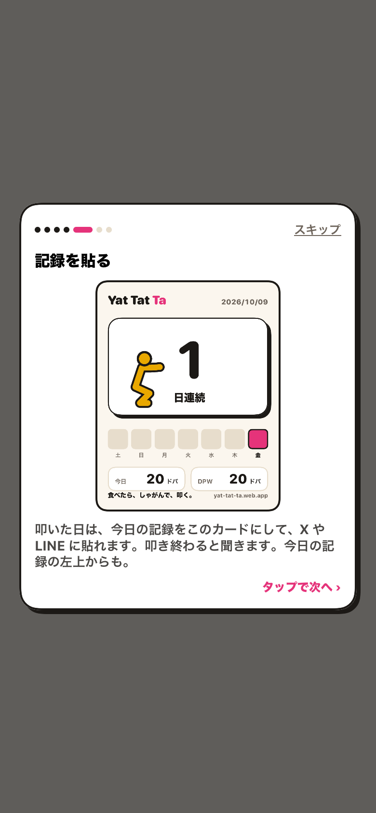

共有を促し、チュートリアルで見せる
開発者の注文
シェアの動線が
わかりづらいです。
スクワット開始前（アプリ起動時、スクワット完了時）に、今日の分のシェアがなければダイアログでシェアを促したい。また、シェア機能についてもチュートリアルに入れたい。カードのデザインもいい感じなので、公開２週間待たずに次のリリースで出したい。
01 / why
ボタンは、開かれないシートの中にあった
前のセッション今日の記録カードを共有するでは、共有のボタンを今日の記録のシートの左上に置きました。そのシートは連続記録の帯の左を押すと開きます。叩いて、演出を見て、アプリを閉じる人は、そこまで行きません。
そこで、カードのほうから利用者の前に出ることにしました。叩いた日に1度、ホームの下から共有の誘いを出す。チュートリアルにも、カードの見本を見せる場面を足す。共有は公開2週間を待たず、次のリリースで出します（開発者が決定、2026-10-09）。
02 / decisions
決めたこと
- 決定 今日まだ共有していなければ、アプリを開いたときと、叩き切ったときに、ダイアログで共有を促す（開発者が決定、2026-10-09）。
- 決定 共有の場面をチュートリアルに入れる（開発者が決定、2026-10-09）。
- 決定 共有は次のリリースで出す。課題の「公開2週間待つ」は取りやめる（開発者が決定、2026-10-09）。
- 決定 「スクワット開始前（アプリ起動時）」は、その日もう叩いた記録があるときの起動のこと。今日まだ叩いていなければ、今日のカードに載せるものがない（今日のマスは空、今日のドパは0）ので出さない（開発者が確認、2026-10-09）。
- 提案 ボタンは「今日はしない」と「共有する」。「今日はしない」を押した日は、もう出さない。押さずに閉じたときや、共有シートを閉じただけのときは、次の機会にまた出す。
- 提案 「共有した」と数えるのは、共有シートで送り終えたときだけ。そのために、共有シートを SwiftUI の
ShareLinkから UIKit のUIActivityViewControllerに替える。ShareLinkは送り終えたかを教えてくれない。 - 提案 チュートリアルの新しい場面は「記録を貼る」。続けた日のすぐあとに置く。帯の左から今日の記録のシートが開く、と言った直後なので、「今日の記録の左上からも」が通じる。
03 / prompt
共有の誘い

途切れたときのカードや、通知の問いかけと同じく、ホームの下から出ます。中に今日のカードそのものを縮めて見せるので、何が貼られるかは押す前に分かります。
ほかの重ね物（スプラッシュ、チュートリアル、叩いたあとの演出、途切れたときのカード、通知の問いかけ）を出している間は出しません。その間に機会が来たら、待たずにやめます。途切れたときのカードと通知の問いかけは、閉じたところでもう一度見ます。初めて叩き切った日は通知の問いかけが先に出て、閉じたあとに誘いが出ます。
| 場面 | 出るか |
|---|---|
| 叩き切って、演出が終わった | 出る（今日まだ共有していなければ） |
| アプリを開いた。今日もう叩いている | 出る。その日最初に開いたときは、スプラッシュが消えてから |
| アプリを開いた。今日まだ叩いていない | 出ない。今日のカードに載せるものがない |
| 途中で閉じた連打の演出のあと | 出ない。叩き切ったときだけ |
| チュートリアルの練習連打のあと | 出ない。練習は記録にならない |
| 今日もう共有した、または「今日はしない」を押した | 出ない。次の記録日になったらまた出る |
04 / tutorial
チュートリアルの「記録を貼る」

見本は、初めての日に目標回数を1回叩いたときのカードです（1日連続、今日のマスだけピンク）。チュートリアルを見る人は、まだ1度も叩いていません。自分が最初の1回を叩いたらこうなる、という形で見せます。
照らす場所はなく、叩けば次へ進みます。進み具合の点は6つから7つになりました。
- 起こす
- →
- 練習連打
- →
- いまのは練習
- →
- 続けた日
- →
- 記録を貼る新しい場面
- →
- ためたドパ
- →
- 回数を変える
- →
- 記録を残すまだログインしていない人だけ
- →
- おわり
05 / implementation
作ったもの
- 1.
AppModel：showsSharePrompt、offerShareIfNeeded、markShared、declineShare。端末の設定に、共有した日と「今日はしない」の日を置く
出す条件をモデルに置き、テストで押さえるため。共有した日は記録ではなく端末の好みなので、Firestore には置かない。 - 2.
ShareSheet：UIActivityViewControllerを、いちばん上の画面から出す
送り終えたかを受け取るため。今日の記録のシートの上からも出せる。 - 3.
SharePromptCardを作り、ホームの重ね物の並びに足す
途切れたときのカードと通知の問いかけのあとに置き、同時には出さない。 - 4. チュートリアルに
.shareを足し、見本のカード（ShareCard.sample）を見せる
共有できることを、最初に1度は見てもらうため。 - 5. テストを6つ足し、チュートリアルのテスト2つを場面の追加に合わせる。文言を日本語と英語で7件足す
テストは全部で104件、すべて通った。
06 / developer
開発者にお願いすること
1 約5分
実機で叩き切り、誘いが出ること、「共有する」で送り終えるとその日はもう出ないことを見る。
2 約3分
設定の「使い方をもう一度」で、記録を貼る場面を見る。